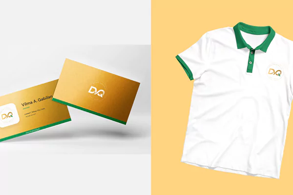
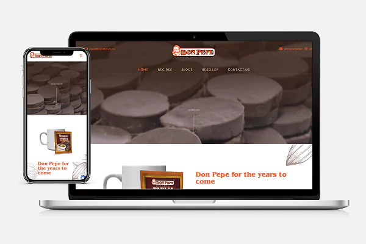
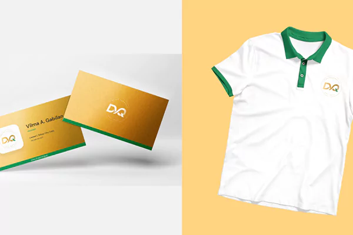
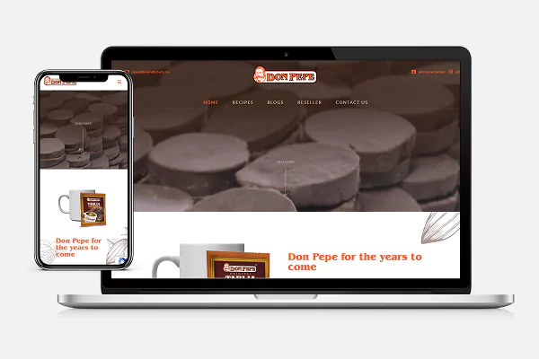

I specialize in digital design and development that drives revenue growth for your business
SELECTED WORKS
and their results
CLIENT: BOSS BEBEH BISTRO CAFE
Drove 8x ROI with targeted ad campaigns for a cafe
Branding • Social Media Marketing • Website Design & Development • Facebook Ads • Graphic Design • UX/UI Design
CLIENT: MARILAND LENDING
Helped a local lending connect with Cebuano Teachers and Vendors online
Branding • Social Media Marketing • Website Design & Development • Facebook Ads • Graphic Design • UX/UI Design
REAL ESTATE INDUSTRY
How strategic Social Media Marketing drove ₱6M in Real Estate sales in 30 days
Branding • Social Media Marketing • Facebook Ads • Graphic Design
CLIENT: MCIAGROUP INC.
200% increase in digital inquiries in less than a month!
Branding • Social Media Marketing • Website Design & Development • Facebook Ads • Graphic Design • UX/UI Design
CLIENT: MB SCALAR TRAVEL SERVICES
Designing a more bookable, user-friendly travel experience
Website Design & Development • Graphic Design • UX/UI Design
CLIENT: BOSS BEBEH BISTRO CAFE
Creating and launching a digital identity of a Cebuano payroll software
Branding • Social Media Marketing • Website Design & Development • Facebook Ads Graphic Design • UI/UX Design


 





ABOUT ME
“I help grow your business through thoughtful digital design and development”
Over 6+ years, I’ve helped different businesses stand out and thrive online. Crafting ROI-driven e-commerce websites and social media campaigns that deliver measurable growth. From sleek, goal driven website design to brand-consistent digital experiences, my work bridges design, strategy, and technology.